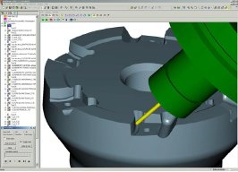
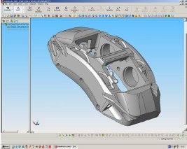
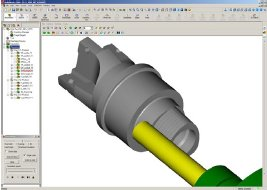

|
Alan
CHRISTMAN, CIMdata,
Inc., Mayýs 2005
Çeviri: Ahmet Barýþ KULDAÞLI, Övünç BÜKE, UMTAÞ
A.Þ.
ÖNSÖZ
CIMdata,
SolidCAM'in fonksiyonelliði üzerine olan bu ürün eleþtirisini
baðýmsýz ve önyargýsýz olarak hazýrlamýþtýr. SolidCAM, SolidCAM
Ltd'nin tescilli markasýdýr. Bu döküman, dünya çapýnda bir
danýþmanlýk ve pazar araþtýrma firmasý olan CIMdata tarafýndan
hazýrlanan birçok yazýlým incelemesinden biridir. CIMdata,
herhangi bir kýsýtlama olmaksýzýn SolidCAM'in bu dokümaný
çoðaltmasýna ve daðýtmasýna izin vermiþtir.
1983
yýlýnda kurulan CIMdata, mühendislik ve üretimde kullanýlan
yazýlýmlar hakkýnda teknik, pazarlama ve stratejik sonuç servisleri
sunmakta ve Pazar araþtýrmalarý yapmaktadýr. Þirket, dünya
çapýnda bir üretici firmalar grubuyla beraber çalýþmaktadýr.
CIMdata ayrýca, kullanýcý ihtiyaçlarý, teknolojik trendler,
stratejik planlamalar ve karþýlaþtýrma sonuçlarý hakkýnda
bilgi edinebilmek için yazýlým satýcýlarýyla da birlikte çalýþmaktadýr.
Önem verdiði konular ise PLM, CAM ve CAD yazýlýmlarýdýr
CIMdata,
CAM yazýlýmlarý açýsýndan endüstriyi yönlendiren bir danýþmandýr.
Daha önceden NC Yazýlýmlarý Gelir Raporlarý (NC Software Assessment
Report) ve NC Ürün Deðerlendirmeleri (NC Product Reviews)
ürünlerini çýkartmýþtýr. Market araþtýrmalarý CIMdata tarafýndan
çeþitli CAM ile ilgili konular incelenerek yapýlmýþtýr. CIMdata
CAM kullanýcýlarýna, satýþçýlarýna ve yazýlým geliþtirici
gruplara danýþmanlýk hizmeti de saðlamaktadýr.
SolidCAM
Ürün Tanýtýmý
SolidCAM
Ltd. dünya çapýndaki CAM sektöründe hýzla yükselerek önemli
bir yer kazanýyor. Gelir artýþ oranlarý giderek yükseliyor,
rakiplerinden farklý bir satýþ ve ürün stratejisi kullanýyorlar
ve kullanýþý kolay, iddialý bir CAM çözümleri var. CIMdata,
SolidCAM'in SolidWorks ile çok benzer olan stratejisinden
etkilenmiþtir. SolidCAM'in vizyonu birçok endüstriye ve kullanýcýya
hitap edecek çok yönlü CAM çözümleri geliþtirmek.
SolidWorks'ün
iki sertifikalý altýn ortak çözümlerinden biri olan SolidCAM,
CAM marketinde bu avantajýyla diðer yazýlýmlara göre ayrý
bir yer kazanýyor. Sertifikalý altýn ortaklar, daha iyi bir
CAD-CAM entegrasyonu saðlayabilmek için NC yazýlýmlarýný,
SolidWorks penceresi altýnda çalýþacak biçimde geliþtiriyorlar.
SolidCAM, SolidWorks ile birleþince, tasarým ve NC açýsýndan
tamamen entegre ve ortaklaþa bir çözüm sunuyor. Dolayýsýyla
SolidWorks, SolidCAM'in modelleyicisi. 2002 yýlýnda SolidCAM,
sertifikalý altýn ortak olabilmek için NC programlarýný tekrar
yazdýlar. Bu SolidCAM için bir dönüm noktasý oldu ve þu anda
da bunun gerçekten iyi alýnmýþ bir karar olduðunu görüyoruz.
CIMdata da bu stratejiyi desteklemektedir.
SolidWorks,
orta ölçekli katý modelleme marketinde bir standart olma konusunda
endüstrinin onayýný almýþ durumda. Þu anda yaklaþýk 200.000
adet endüstriyel oturuma sahip ve bu sayý büyük bir hýzla
artmakta. SolidCAM de marketin bu isteðini karþýlarken üstün
bir baþarý gösteriyor. SolidWorks ile olan iliþkilerini verimli
bir þekilde geliþtiriyorlar ve SolidWorks ismini gayet baþarýlý
bir biçimde kullanýyorlar.
SolidCAM'in
sade bir stratejik vizyonu var. Tüm modelleme yeteneði SolidWorks
tarafýndan saðlanmakta olduðundan tamamen CAM üzerine yoðunlaþmýþ
durumdalar. SolidCAM, parça tasarýmý, kalýp tasarýmý, tasarým
araçlarý, analiz ürünlerine eriþim, diðer CAD ile ilgili araçlar,
bilgi yönetimi, proses planlama ve PDM gibi tasarým ve tasarýmla
ilgili fonksiyonlar için SolidWorks'ten yararlanýyor. SolidWorks'ün
sertifikalý altýn ortaðý olmanýn verdiði destek SolidCAM için
çok önemli bir anahtar. Bir altýn ortak olarak iþlerin yönetiminde,
pazar ve ürün geliþtirme programlarýnda SolidCAM, SolidWorks'e
kaçýnýlmaz bir biçimde baðlanmýþ durumda.
SolidCAM'in
bir diðer gücü de, geniþ bir ölçeðe sahip endüstriyel iþleme
yeteneklerine sahip, kullanýmý kolay ve uygun fiyata bir çözüm
sunmalarý. SolidCAM her amaca göre kullanýlabilecek bir CAM
ürünü. Tüm delik delme iþlemleri, 2 eksen, 3 eksen, 4 eksen,
5 eksen pozisyonlamalý, sürekli 5 eksen frezeleme, yüksek
hýzda frezeleme, yatay 4 eksen iþleme, torna, C eksen torna
ve tel erozyonu destekliyor. Ayrýca, koordinat sisteminin
otomatik ayarlanmasý, 3B sabit adým, trochoidal frezeleme
stratejisi, gagalama yöntemiyle kaba atma, takým tutucusu
için çarpma testi, 3+2 eksen iþleme, c eksen torna desteði
ve kalan talaþ takibi ileri seviye fonksiyonellikleri de vardýr.
|  |
|
Figür
1 - Bir Takým tutucunun 3+2 pozisyonlamalý freze ile
iþlenmesi |
SolidCAM'in
SolidWorks ile olan tek pencere entegrasyonu sayesinde tüm
iþleme operasyonlarý, SolidWorks ortamýndan ayrýlmadan hesaplanýr
ve kontrol edilebilir. Ýþlemede kullanýlan tüm 2B ve 3B geometriler
tasarým modeli ile tamamen iliþkilidir. Yani iþleme için kullandýðýnýz
geometrilerin herhangi birinde bir deðiþiklik yapýlýrsa SolidCAM
geometrinin deðiþtiðini algýlar ve kullanýcýnýn tüm takým
yollarýný otomatik olarak tekrar senkronize edip hesaplamasýna
olanak verir.
SolidCAM,
kütüphanesine tanýmladýðýnýz iþlemeleri de destekleyen iþlem
bazlý bir CAM programý. SolidCAM'in otomasyona yönelik birincil
yaklaþýmý iþlem þablonlarýnýn oluþturulmasý ve benzer durumlarda
bu þablonlarýn kullanýlmasýna izin vermesi. Diþ iþleme, yüzey,
taban, duvar iþleme ve artan malzemenin iþlenmesi gibi genel
durumlar için programla beraber gelen hazýr þablonlar mevcut.
Kullanýcýlarda uygun yerlerde kullanmak üzere kendi standart
iþleme iþlemlerinin þablonlarýný oluþturabilirler.
Üretim
sektöründe olan SolidWorks kullanýcýlarýnýn çoðu potansiyel
SolidCAM kullanýcýsýdýr. SolidCAM pazarý da giderek büyüyerek
SolidWorks pazarý olmaktadýr. SolidCAM, ya SolidWorks kullananlara
eklenti bir (add-on) CAM programý olarak yada SolidWorks ile
birlikte promosyon bir CAD/CAM paketi olarak sunulmakta. SolidCAM,
standart orta ölçekli katý modelleme programý olan SolidWorks'ün
pazardaki durumuna ve SolidWorks ile SolidCAM'in entegrasyonuna
dikkat çekmektedir. Bu entegrasyonun yararlarý SolidCAM ile
diðer CAM odaklý programlarý karþýlaþtýrdýðýnýz zaman açýkça
ortaya çýkýyor.
SolidCAM,
SolidWorks ile olan entegrasyonuna ek olarak SolidWorks'ün
birçok alan ile ilgili çözüm ortaklarýna, CAM olarak ta kullanmasý
kolay, programlanabilir proses otomasyonuna uygun fiyatýna
ve dünya çapýnda destek garantisine dikkat çekiyor. Sonuç
olarak kullanýcýlar fiyat / performans oraný gayet uygun bir
þekilde verimli, kapsamlý ve tam entegre bir CAD/CAM paketine
sahip olabilir.
SolidCAM,
SolidWorks ile entegre olduðundan beri hýzla büyüyor. %39'dan
%51'e artan gelir artýþ oranýyla CIMdata, SolidCAM'i 2003
ve 2004 yýllarýnýn en hýzlý büyüyen NC programý seçti. CIMdata,
%41'lik büyüme oranýyla SolidCAM'in 2005 yýlýnýn en hýzlý
büyüyen program olacaðýný tahmin ediyor. Bu büyüme oranlarý
diðer CAM programlarýnýn ana gelirlerine göre daha az bir
gelirden olsa da yinede çok önemliler. SolidCAM pazarda kendini
kanýtlamýþ durumda.
|  |
|
Figür
2 - Kompleks geometriye sahip bir parçanýn SolidWorks
ile tasarýmý |
Bu
önemli büyümeyi desteklemek için SolidCAM iç kaynaklarýný
büyütmeyi, CAM fonksiyonelliklerini arttýrmayý, distribütörlerini
arttýrmayý ve SolidWorks ile olan iliþkilerini geliþtirmeyi
planlýyor.
SolidCAM
stratejik geliþim sýnýrlarýný, kendi iç geliþimini hýzlandýrmak
yanýnda hýzla geliþen yazýlýmlardan da dýþarýdan destek almayý
düþünerek belirledi. SolidCAM, ModuleWorks firmasýnýn MachineWorks
yazýlýmýný 5 eksen iþlemede takým yolu doðrulama ve simülasyon
amaçlý kullanmaktadýr.
Kullaným
kolaylýðý ve desteklenen geniþ iþleme operasyonlarýndan dolayý,
CIMdata kullanýcýlarýn birçok fonksiyonu uygulamak zorunda
olduðu deðiþik parçalarý ürettiði makineciler yada küçük ve
orta ölçekli makineciler için SolidCAM'in uygun olduðuna inanýyor.
SolidCAM, kalýplarýn yapýlýþýnda, uzay ve uçak parçalarý ve
geniþ hacimli parçalarýn üretiminde kullanýlabilir. Sadece
tek bir kullanýcý grubuna çalýþan satýcýlarýn aksine SolidCAM
sadece tek bir pazara yönelmez.
SolidCAM
birçok sanayide kullanýlmaktadýr. Bunlardan bazýlarý; elektrik,
elektronik, otomotiv, havacýlýk, ve kullanýcý ürünleri sanayileridir.
Bu çeþitlilik SolidCAM'in SolidWorks ile pazarlanmasýndan
ve SolidCAM'in çok amaçlý kullanýlabilmesinden kaynaklanýyor.
SolidWorks genel amaçlý bir katý modelleyicidir ve bütün endüstrilerde
kullanýlmaktadýr. SolidCAM, SolidWorks tabanlý çalýþmaya baþladýðýndan
beri SolidWorks'ün kullanýldýðý endüstrilerde kullanýlmaktadýr.
Profesyonel programcýlarýn kullanabileceði gibi operatörlerin
de çok kolay þekilde kullanabileceði bir programdýr. Sadece
G-kodunun çýkarýlamadýðý SolidCAM demo versiyonu internetten
indirebilirsiniz. Ýþlenecek parçalarý ve iþleme operasyonlarýný
görebilirsiniz.
SolidCAM
þu anda diyalog kutularýndaki entegre grafik parametrelerine
ve 4 eksen tornaya destek saðlamamaktadýr.
SolidCAM'in
Ýsrail ve Almanya' da birçok lisanslý müþterisi vardýr ve
burada pazarlamada satýþçýlarý kullanýr. Bunlarýn 50 ülkede
oldukça etkileyici distribütör aðý vardýr. Geçen yýl distribütör
sayýsý iki katýna çýkmýþtýr ve distribütörler CAM yazýlýmý
distribütör aðýnda ilk ondadýrlar. Yeni SolidCAM distribütörlerinden
çoðu SolidWorks distribütörleridir. Yeni distribütörler SolidCAM
ailesine katýldýkça diðer CAM satýcýlarý da SolidCAM satmaya
baþlamýþlardýr öyle ki þu an önemli distribütörler önceden
diðer NC yazýlým ürünlerinin distribütörü idiler.
SolidCAM,
pazarlama bakýþ açýsý olarak SolidWorks'ün izlediði yolu takip
ediyor. SolidCAM SolidWorks' ün kullanýcý konferanslarýnda
yer alýyor, SolidWorks' ün web sayfasýnda reklamýný yapýyor
ve SolidWorks distribütörleri ile yakýn çalýþýyor. Eskiden
SolidCAM pazarlama programýný sadece Almanya gibi ana pazarlar
için yapýyordu. Bu þekilde genel CAM pazarýndan çok az pay
alabildiler. Ama bu SolidCAM pazarlama aðýnýn geniþlemesi
ve büyümesi için sadece bir baþlangýçtý.
SolidCAM'
in yeni satýþlarýnýn çoðu SolidWorks Web sitesinden ve distribütör
aðýndan kontak kurularak gerçekleþtiriliyor. Bu kontaklar
genelde ciddi ilgisi olan CAM kullanýcýlarý oluyor. SolidCAM
hýzlý geliþimini bu kaliteli kontaklar sayesinde kendi kontak
oluþturma programýný uygulamadan saðladý.
Müþteriler
distribütörlerle ya da SolidCAM web sitesi aracýlýðý ile ürün
desteði alýyorlar. Distribütörler CAM konusunda kalifiyedirler.
Amerika'da ki ana distribütörlerden biri çok çeþitli takýmlarýn
olduðu çok amaçlý bir takým marketi iþletiyor.
Bu raporda deðerlendirilen SolidCAM 2006 Versiyon 10 Nisan
2005'te piyasaya sürülecek. SolidCAM sürümleri her altý ay
içinde yapýlmaktadýr. SolidCAM ile SolidWorks ürün geliþtirmesi
ayrý ayrý yapýlmaktadýr fakat SolidWorks'ün Alpha ve Beta
sürümleri SolidCAM'e her zaman tedarik edilir. SolidWorks'
teki yeniliklerin SolidCAM' e uyumluluðu saðlanýr.
1.
Operasyon Ortamý
SolidCAM,
sadece SolidWorks penceresi içinde çalýþmakta. Ayrý bir program
gibi çalýþmýyor. Dolayýsýyla kullanýcý arayüzü SolidWorks'ün
kullanýcý arayüzü. SolidCAM yüklendiði zaman "Tools"
ve "Windows" araç çubuklarý arasýnda SolidCAM ikonu
çýkar. SolidCAM ikonunu da içeren SolidWorks ikonlarý kullanýcý
arayüzünün üst tarafýnda her zaman kalýr. SolidCAM, CAM araçlarýnýn
kullanýlabilmesi için SolidWorks menülerine ikonlar ekler.
SolidWorks ve SolidCAM arasýnda tutarlý bir görüntü birliði
olmasý açýsýndan, SolidCAM, SolidWorks tarafýndan kullanýlan
metodolijileri ve formatlarý kullanmaktadýr.
|  |
|
Figür
3 - SolidCAM'in SolidWorks içerisindeki arayüzü |
SolidCAM
ile çalýþýrken parçalar üzerine uyguladýðýnýz operasyonlarýn
hepsi bir aðaç görüntüsü þeklinde ekranýn sol tarafýnda tutulur.
Operasyonlarý gördüðümüz bu kýsým ayný zamanda CAM yöneticisidir.
Operasyonlarda kullanýlan stratejiler, takýmlar ve geometriler
referanslý bir þekilde görüntülenir. Ýþlemlerde kullanýlan
takýmlar ekranýn sol tarafýndaki aðaç görüntüsünde sýralý
bir biçimde listelenir. Takýmlarýn kullanýmlarýna göre olan
diziliþleri SolidCAM tarafýndan ayarlanmaktadýr. Takým numaralarý
da listelenmektedir. Takýmlara istenirse takým tutucusu da
eklenebilir. Operasyon isimleri üzerine týklayýp sürükleyip
býrakarak operasyon sýralarý deðiþtirilebilir. Bir parçayý
iþlemek için önce bir iþleme stratejisi seçersiniz daha sonra
karþýnýza gelen diyalog kutularýna iþlem parametrelerinizi
girersiniz. Ýþlemle ilgili olan tüm parametreler ve seçimler
bu diyalog kutularýndan yapýlmaktadýr.
SolidWorks
ve SolidCAM istenirse ayný pencerede kullanýlabildiði gibi,
istenirse pencere bölünerek, bir tarafta SolidWorks bir tarafta
SolidCAM olmak üzere de çalýþýlabilir. Eðer pencereyi bölerseniz
üretilecek parça SolidWorks penceresinde kalýr ve tüm CAM
iþlemleri SolidCAM penceresinden takip edilebilir.
SolidCAM
tamamen SolidWorks içerisinde çalýþan bir program olduðu için
ve SolidWorks ile tam entegre bir altýn ortak olduðundan programlar
arasýnda herhangi bir veri transferi yapmaya gerek yoktur.
Buna montajlar, geometrik veriler, unsurlar ve toleranslar
gibi geometrik olmayan ürün bilgileri de dahildir. Amerika'da
makine üretimi yapan bir þirketin yöneticisi þöyle demiþtir:
"SolidCAM, SolidWorks'e tamamen uyuyor. Tek bir veri
tabaný üzerinde çalýþabilmek mükemmel"
SolidWorks'ün
tüm sertifikalý ortaklarý, SolidWorks'ün kendine özgü olan
geometri verilerini kusursuz bir þekilde okuma yeteneðine
sahiptir. Geometriler arasýndaki iliþkiler de desteklenir.
Bununla beraber SolidCAM gibi sertifikalý altýn çözüm ortaklarý
SolidWorks ile entegre olarak ayný pencere içinde çalýþýrlar.
SolidWorks programýnýn görünüþü ve arayüzü de ayný þekilde
korunmaktadýr. SolidWorks ile SolidCAM arasýnda iki seviyeli
bir iliþki vardýr. Birincisi geometri iliþkileridir. Üretilecek
parça geometrisi üzerinde deðiþiklik, SolidCAM'de ki takým
yollarý da otomatik olarak deðiþir. Ek olarak, altýn ortaklarda
fikstürler ve kalýp bileþenlerinde de bu iliþkiler saðlanýr.
Böylece parça üzerinde bir deðiþiklik yapýldýðý zaman iliþkili
olan tüm bileþenler de otomatik olarak güncellenir. Güncellemeler
parça üzerinde deðiþiklik yapýlan bölgelere uygulanýr.
SolidCAM,
C++ dilinde yazýlmýþtýr. Kullanýcýlar SolidCAM sistemi üzerinde
iþleme prosesleri, delik tanýma için teknoloji veri tabanlarý
ve post prosesör gibi bazý iþlemlerde özelleþtirme yapabilirler
fakat SolidCAM, Visual Basic gibi programlarla API tabanlý
özelleþtirmeler yapýlmasýna izin vermemektedir.
SolidCAM
kullanýcýlarý için dosya yönetimi tamamen SolidWorks ortamýnda
halledilmektedir. Tüm veri tipleri -parçalar, kalýplar, fikstürler-
bu sayede desteklenir. PDMWorks, SolidWorks tarafýndan saðlanan
bir veri yönetim sistemidir. Hem kiþisel çalýþmalarýnýzda,
hem de çok kullanýcýlý ortamlarda kullanabilirsiniz. PDMWorks
ile dosyalarýnýzý güvenli bir þekilde saklayabilir, NC verilerinizi
organize edebilir, dosya revizyonlarýnýzý kontrol edebilir,
proje verilerinizi ve iþ akýþýný düzenleyebilirsiniz. Ayrýca
çalýþma gurubunuzun iþbirliði içinde çalýþmasýný geliþtirebilirsiniz.
Zamanla PDM çözümleri CAM kullanýcýlarý için önemli bir hale
gelmiþtir. Diðer büyük ölçülü PDM yazýlýmlarýnýn aksine, PDMWorks
küçük ve orta ölçekli firmalarýn kullanýmý için tasarlanmýþtýr.
Kurulumu, öðrenmesi ve kullanmasý gayet kolaydýr.
SolidWorks
ile SolidCAM, modellerinizi karþýlaþtýrma unsuru mevcuttur.
Ýki modeli karþýlaþtýrýrken, yazýlým size modeller arasýndaki
farklarý göstermektedir. SolidWorks'te model üzerinde bir
deðiþiklik yapýldýðý zaman, SolidCAM parça üzerinde deðiþiklik
yapýldýðýna dair bir bilgi görürsünüz. Bu aþamada, SolidCAM
kullanýcýsý, parçalarý karþýlaþtýrarak deðiþikliðin nereye
yapýldýðýný rahatça anlayabilir. Eðer PDMWorks kullanýlýyorsa,
deðiþikliðin kim tarafýndan, ne zaman, nereye ve neden yapýldýðý
da görüntülenebilir.
Bir
altýn ortak olarak, SolidCAM, SolidWorks'te yapýlan yazýlýmla
ilgili geliþtirmeleri takip etmektedir. SolidWorks'ün yeni
fonksiyonlarýndan faydalanýlmasý için, SolidWorks'ün Alpha
ve Beta sürümleri SolidCAM tarafýndan tedarik edilir ve SolidCAM
üzerinde gerekli modifikasyonlar yapýlýr ya da gerekiyorsa
ek unsurlar eklenir. Sonuçta SolidCAM, SolidWorks sürümlerini
yakýndan takip etmektedir.
|